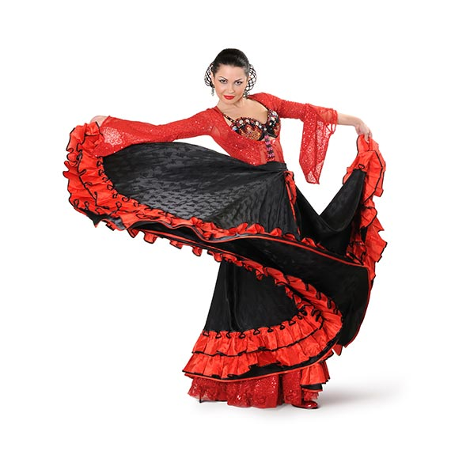
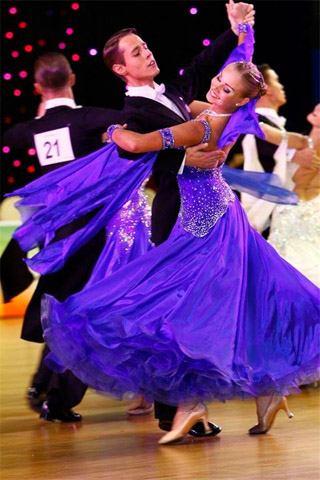
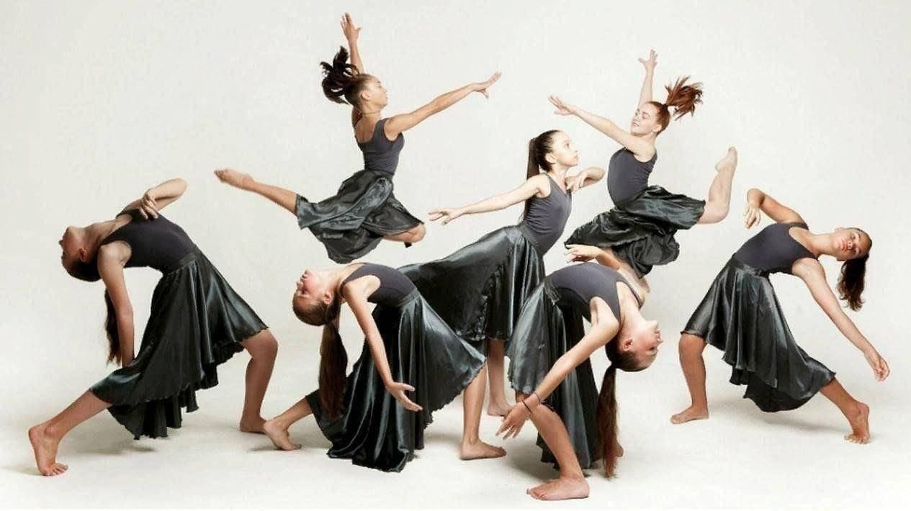

Страница 2: Народные и Уличные стили

Народный танец Испании, сочетающий в себе танец, гитару и вокал. Характеризуется сложной работой ног (дробь), выразительной пластикой рук и эмоциональной отдачей.

Парный бальный танец, исполняемый в быстром темпе под музыку размером 3/4. Главная особенность — плавное вращение пары по залу. Символ элегантности и аристократизма.
Один из стилей хип-хопа, включающий акробатические элементы, вращения на полу (брейки) и сложную работу ног (футворк). Требует отличной физической подготовки.

Современный сценический танец,сочетающий элементы модерна и современной хореографии.В контемпе важны пластика, гибкость, музыкальность и умение "говорить" с помощью тела.